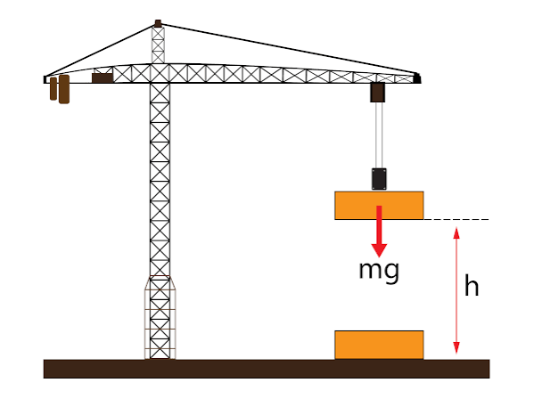

Trabalho de uma Força
O trabalho de uma força é uma grandeza física escalar que mede a transferência ou a transformação de energia de um corpo devido à aplicação de uma força que gera um deslocamento. No Sistema Internacional de Unidades (SI), o trabalho é medido em Joules (J).
Diferente do conceito cotidiano de "trabalho" (associado a esforço ou profissão), na física só existe trabalho se houver uma força aplicada e um deslocamento gerado por ela (ou por uma de suas componentes). Se você empurrar uma parede com toda a sua força e ela não se mover, o trabalho realizado sobre a parede será nulo.
Como Calcular o Trabalho:
Quando uma força possui intensidade, direção e sentido constantes ao longo de todo o percurso, o trabalho (τ ou W) é calculado pelo produto da força, do deslocamento e do cosseno do ângulo entre eles:
τ + Fdcosθ
Onde:
τ: é o trabalho em Joule (J)
P: é o Módulo da força aplicada em Newtons (N).
d: é o deslocamento em metros (M).
θ: é o ângulo entre a força e peso
Casos Especiais de Forças Importantes:
Algumas forças do nosso cotidiano possuem equações específicas para o cálculo do seu trabalho:
Trabalho da Força Peso (τp):
O trabalho realizado pela gravidade depende apenas da massa do corpo (m), da aceleração da gravidade (g) e da diferença de altura (h) entre o ponto inicial e final. Independe da trajetória percorrida, pois o peso é uma força conservativa.
- Na descida (Trabalho Motor):τp = + m ⋅ g ⋅ h (a gravidade ajuda a cair)
- Na subida (Trabalho Resistente):τp = - m ⋅ g ⋅ h (a gravidade opõe-se à subida)
Trabalho de uma Força Variável:
Se a força muda de valor ao longo do caminho (como a força de uma mola que estica), não podemos usar a fórmula geral diretamente. Nesses casos, o trabalho é calculado por meio da área do gráfico da Força (F) em função do deslocamento (d):